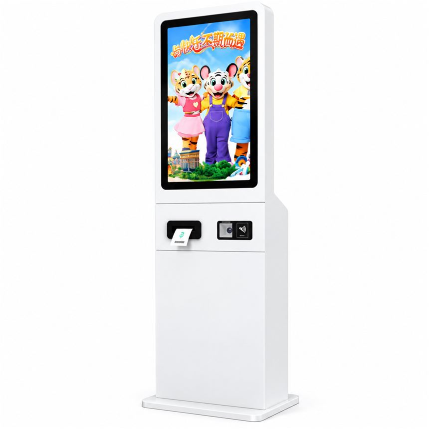
Floor-standing
Compact floor unit with a vertical touchscreen and an integrated service panel for tickets and scanning.
In view: Vertical touchscreen · Receipt printer · QR code scanner · Contactless card reader
From check-in and order placement to queue management, a kiosk works best when the hardware design follows the end-to-end service experience.
Reference photos of units from our build range: hospital registration and payment terminals, ticketing machines, government and social-security service units, parking and financial self-service machines. Modules visible on each unit are listed under the photo.

Compact floor unit with a vertical touchscreen and an integrated service panel for tickets and scanning.
In view: Vertical touchscreen · Receipt printer · QR code scanner · Contactless card reader
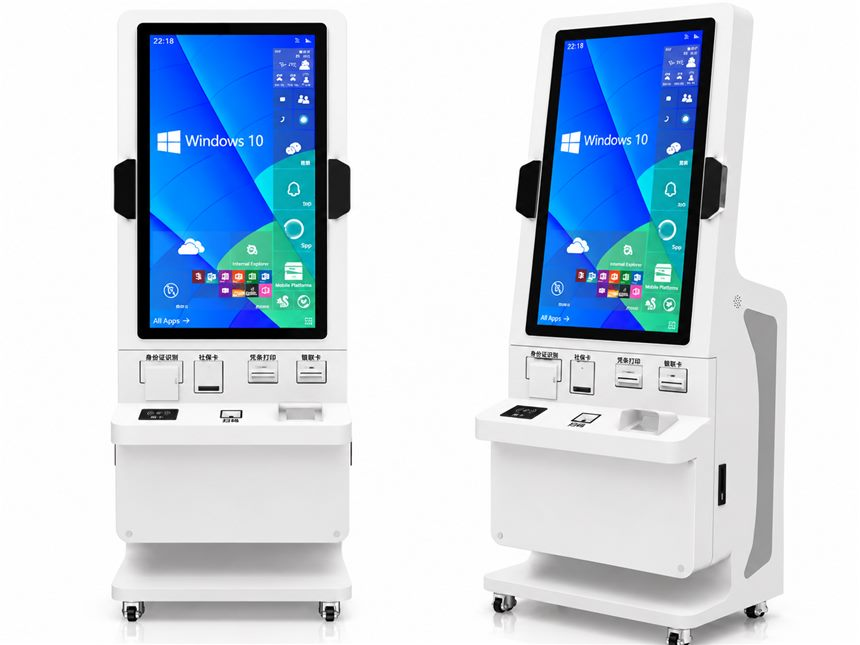
Windows-based terminal for identity and card based government or social-security workflows, shown on a mobile caster base.
In view: ID document reader · Social-security card reader · Receipt printer · Bank card reader · Barcode scanner · Caster base

Dual-screen unit: a guidance display above and the working touchscreen below, with keyboard and receipt hardware on the deck.
In view: Guidance display · Touchscreen · Retractable keyboard · Card readers · Receipt printer · Lockable cabinet
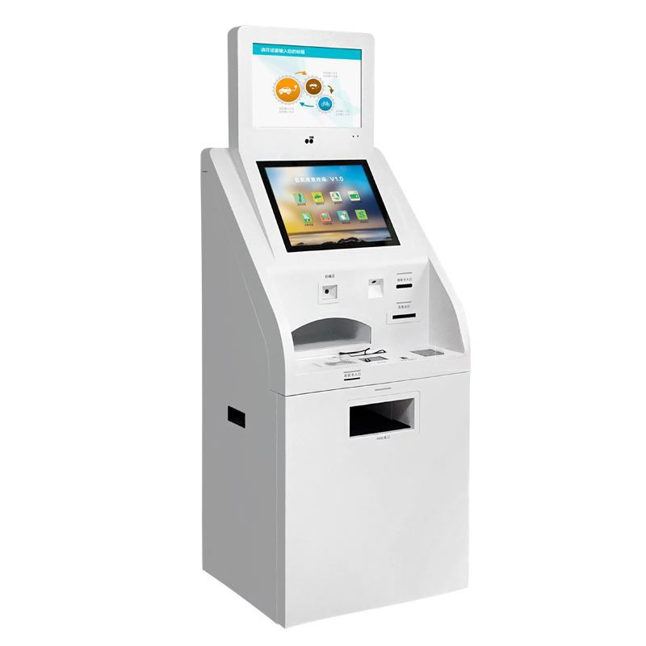
Two stacked displays separate queue and notice content from the self-service area, with a high-capacity base cabinet.
In view: Upper guidance display · Lower touchscreen · Card reader · Receipt printer · Large capacity cabinet

Slim dark-cabinet unit with a vertical display and an angled payment deck for cards and scan codes.
In view: Vertical display · Angled payment deck · Card reader · Scanner area
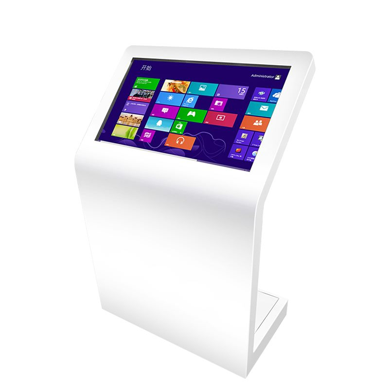
Horizontal touchscreen set into a curved enclosure, suited to directories, wayfinding and self-service lookup.
In view: Horizontal touchscreen · Curved enclosure
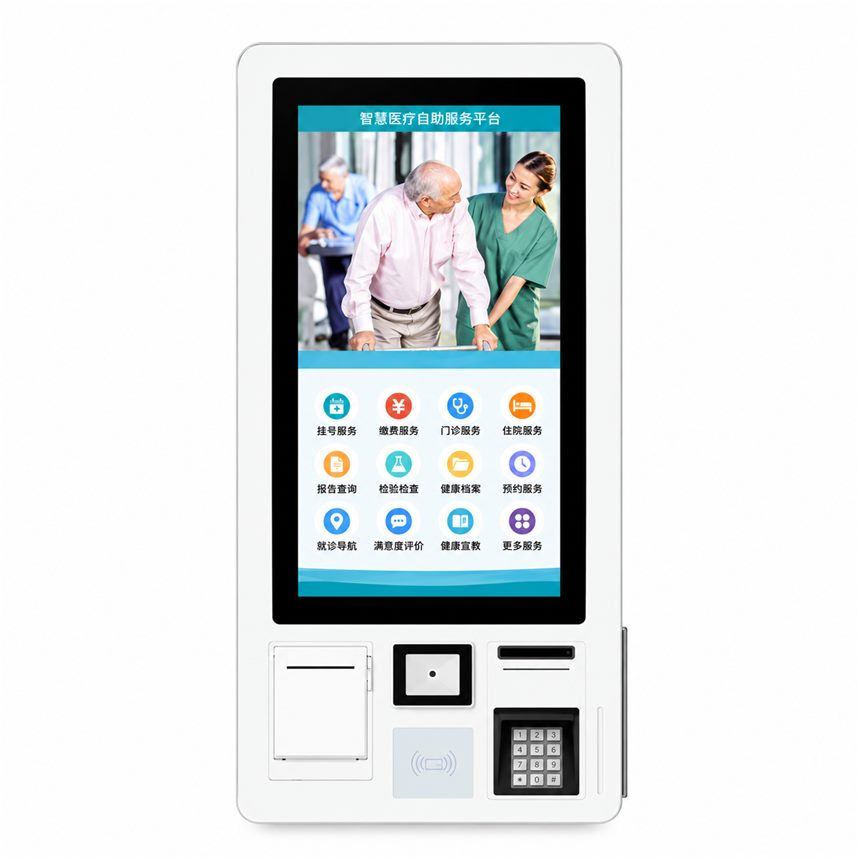
Slim wall unit that packs registration and payment hardware into a small footprint beside a corridor or lift lobby.
In view: Wall-mounted touchscreen · Receipt printer · Camera · Card reader · PIN pad · Contactless reader
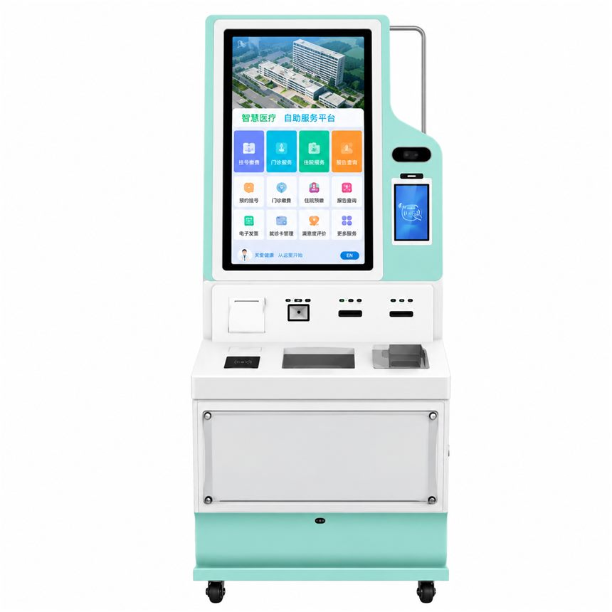
Tall service station with a side identification column, multiple payment modules and a lockable base, mounted on casters.
In view: Vertical touchscreen · Camera column · Secondary display · Receipt printer · Card readers · Contactless reader · Lockable cabinet · Casters

Vertical touchscreen organised around account, payment and enquiry flows, with the PIN pad and card readers on the lower panel.
In view: Vertical touchscreen · Receipt printer · QR scanner · Card swipe · PIN pad
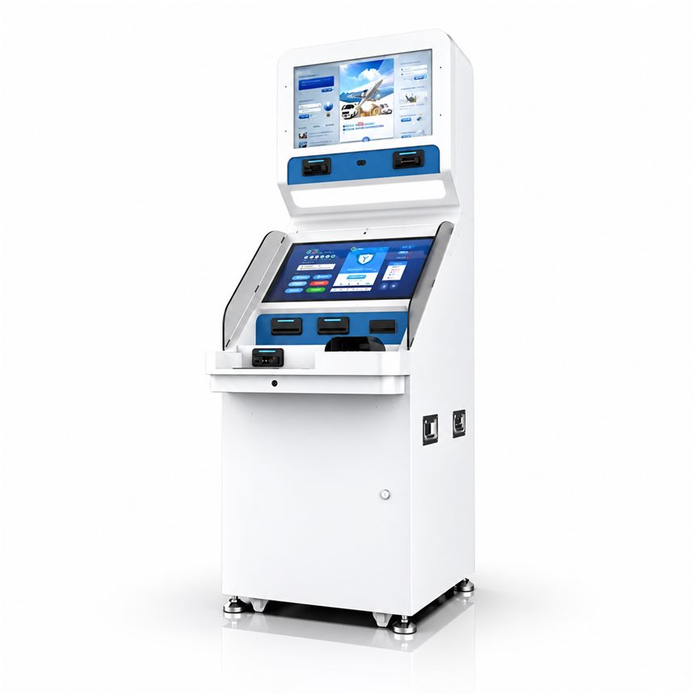
Large public-office unit: an advertising display on top and a working touchscreen with a full reader set below.
In view: Top display · Touchscreen · Multiple card readers · Receipt printer · Camera module

Recessed-screen enclosure with keypad and card hardware over a reinforced service cabinet for banking-style flows.
In view: Recessed display · PIN keypad · Card reader · Cash/document aperture · Secure service cabinet
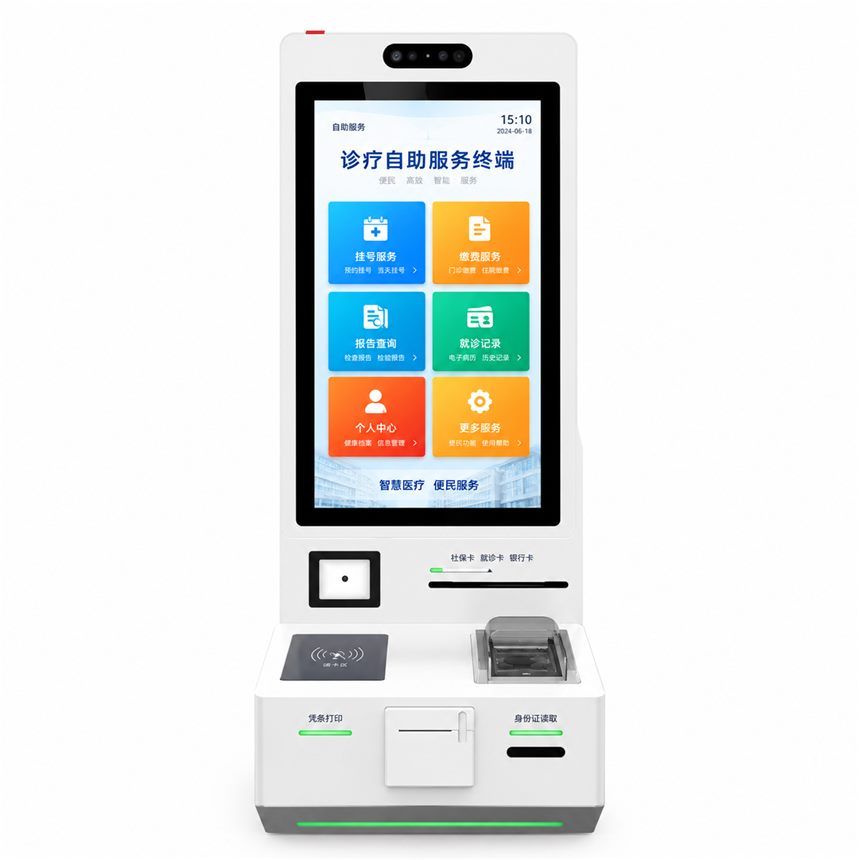
Registration, payment and report flows on one vertical touchscreen, with card dispensing hardware in the base.
In view: Vertical touchscreen · Card dispenser · Contactless reader · Receipt printer · ID reading
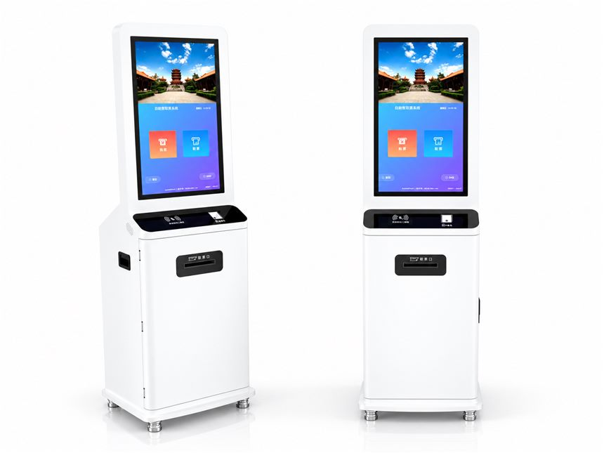
Slim unit for ticket purchase and collection, with a QR/contactless panel above the ticket outlet.
In view: Vertical touchscreen · Ticket printer outlet · QR scanner · Contactless reader
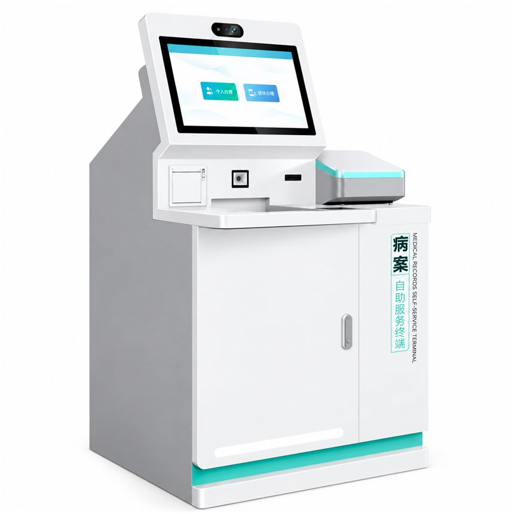
Counter-height enclosure dedicated to medical record printing and identity verification.
In view: Touchscreen · Camera · Document slot · Printing module
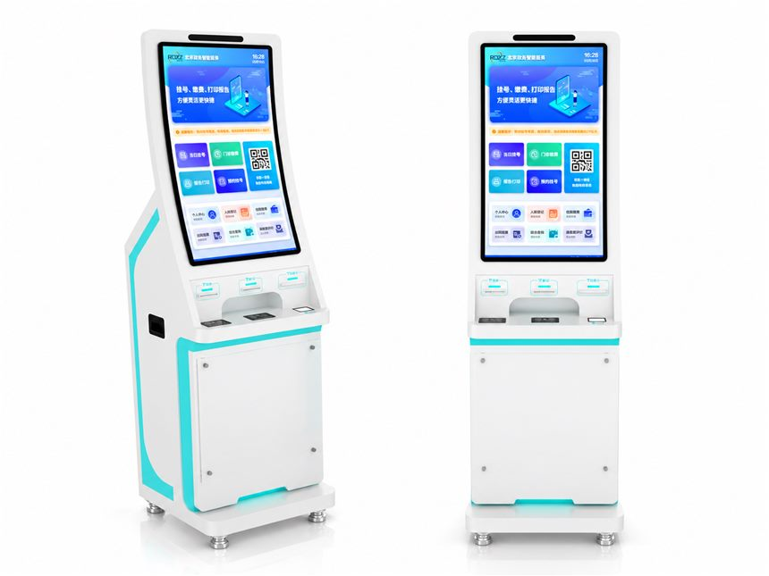
Curved vertical display with insurance service tiles and a reader-and-printer deck below.
In view: Curved vertical display · Card readers · Receipt printer · Scanning module
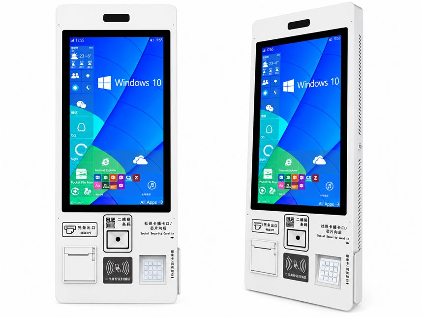
Ultra-slim body with a full document and payment module set for social-security self-service.
In view: Slim vertical touchscreen · Receipt printer · QR scanner · Social-security card slot · ID scanner · Compact keyboard
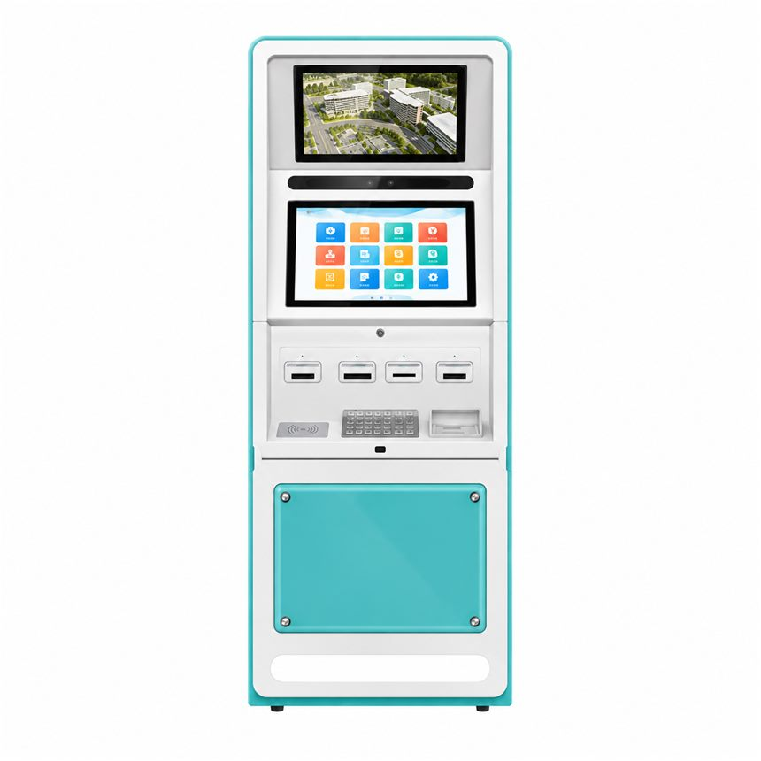
Service island for border checkpoints combining a guidance screen, main touchscreen and four reader slots over a high-capacity cabinet.
In view: Guidance display · Touchscreen · Four card-reader slots · Keyboard · Contactless pad · Large capacity cabinet
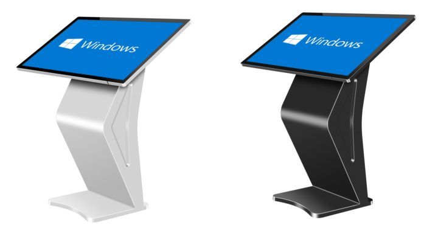
Compact angled touchscreen stand for queries, check-in and information points; available in light and dark finishes.
In view: Angled touchscreen · Compact base
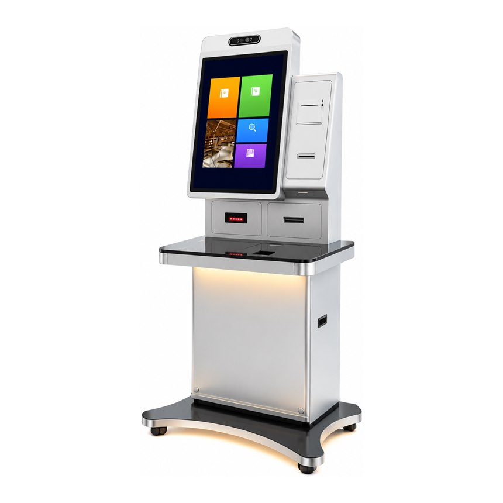
32-inch 2560 × 1440 portrait display above a glass scan deck, with 1D/2D barcode and QR scanning, IC/ID and bank card reading, national ID reader and receipt printer — one cabinet for border, bank, hotel, cinema and supermarket counters.
In view: 32-inch QHD touchscreen · 1D/2D barcode & QR scanner · IC/ID & bank card readers · National ID reader · Receipt printer · LED base lighting
Each model page now lists its reference display size, computing platform and module set; brightness, ingress protection and final configuration are confirmed per project.
One route for a single prototype and a production batch. The numbers below are our standard process and are confirmed again in the quotation.
Every finished unit runs a 12-hour burn-in with the display, card readers, printer and scanner exercised in a loop before it is packed.
Standard lead time is 15 days from deposit and approved drawing or sample, for orders inside our standard module set.
Prototype and pilot units follow the same test route as volume orders, so a single sample is representative of the batch.
Cabinets are laser cut, CNC bent and powder coated; colour and logo are approved on a sample before the batch runs.
Printers, readers, scanners and cameras are mounted and tested as one set, so the terminal arrives with a working peripheral stack instead of loose parts.
Final inspection covers function, finish, labelling and packing list, and the packed unit is photographed for the order record.
Certification paperwork for CE, FCC and RoHS is prepared per destination market when the project requires it.
A quick guide before you send us a reference of your own.
The printer, reader and keypad layout can be read from a photo. Electrical, environmental and performance ratings cannot, so nothing here is quoted as a fixed specification.
Cabinet colour, logo placement and front graphics are part of every OEM/ODM project; the photos show reference finishes only.
A photo of a unit you like plus a short description of the task is enough to start. We reply with the closest build, the open questions and the next step.
Touchscreen layout, multilingual access and accessibility requirements.
Scanner, printer, camera, card reader and payment device planning.
POS, check-in platform, queue system or content service integration.
Network setup, maintenance access and remote management.